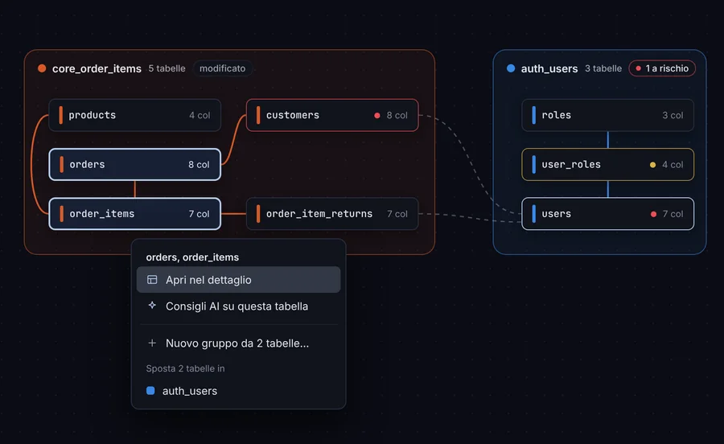
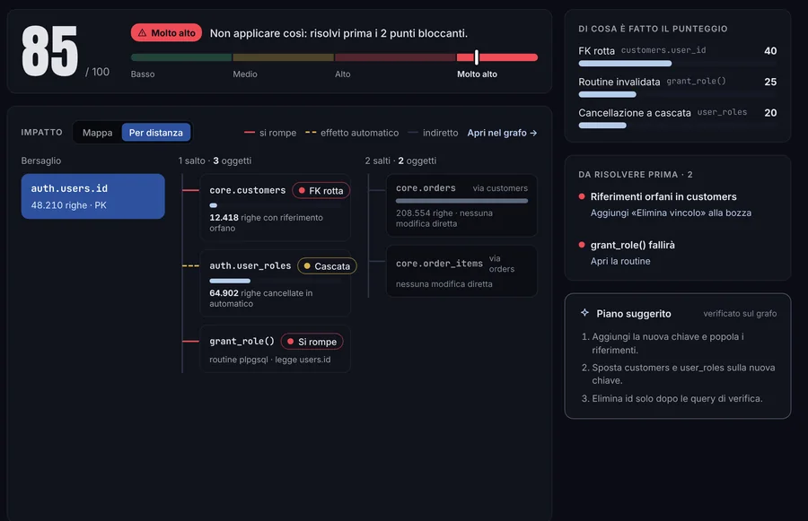
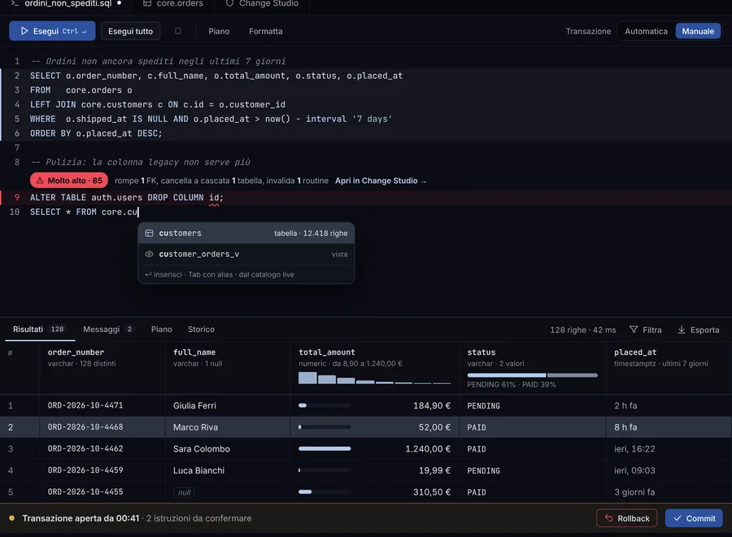
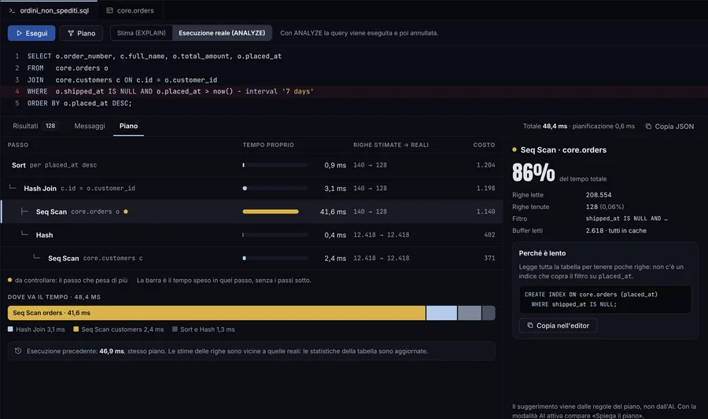
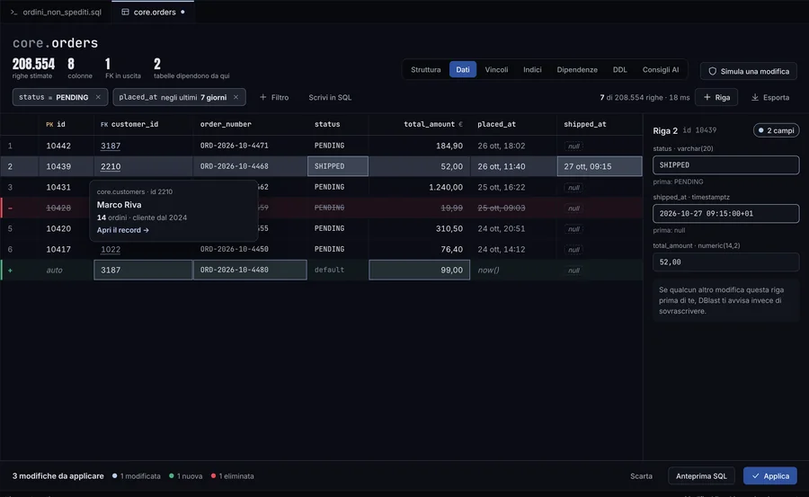
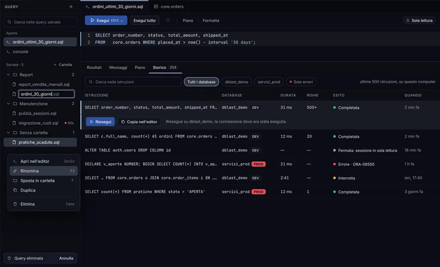
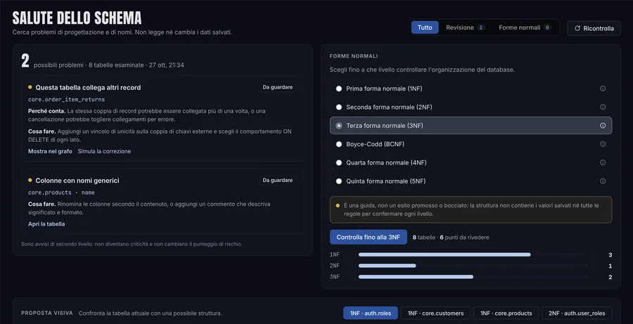
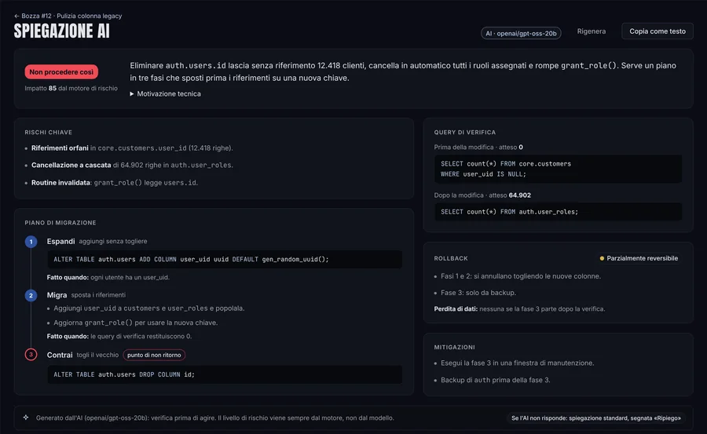
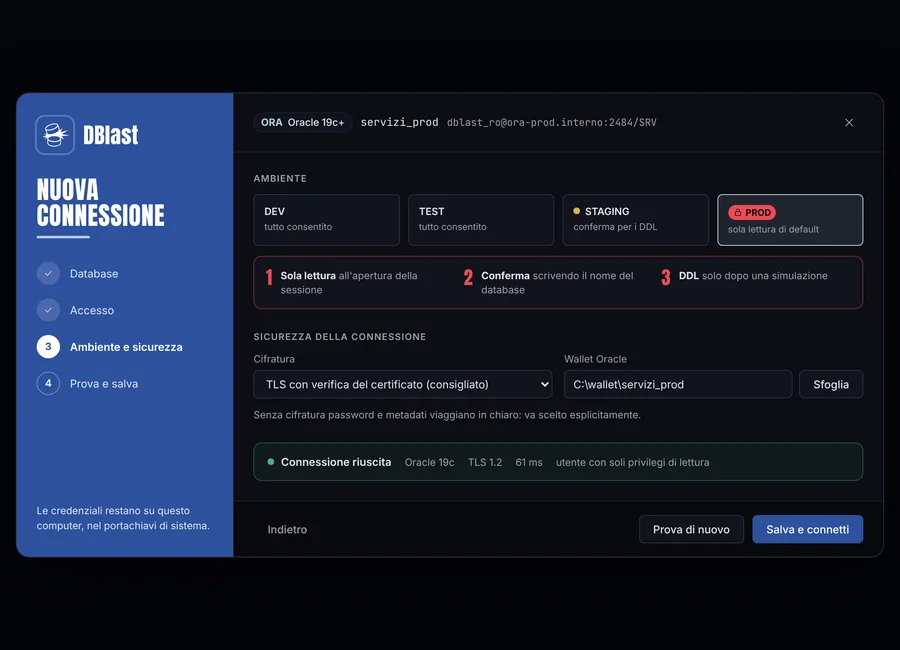

Il tuo database, finalmente chiaro.
DBlast ti fa vedere com’è fatto il database, ti avvisa prima che una modifica causi problemi e ti permette di lavorarci con SQL.
In un’unica app
Dall’analisi alla modifica, senza cambiare strumento.
Esplori lo schema, provi le modifiche e lavori con SQL nello stesso posto, su PostgreSQL, Oracle e Db2.

- Mappa
- Simulazione
- Editor SQL
- Piano
- Dati
- Storico
- Check-up
- AI opzionale
Funzioni principali
Dall’analisi alla modifica.
Mappa
Il database come una mappa
Tabelle e collegamenti diventano una mappa da esplorare. Le parti collegate tra loro vengono raggruppate automaticamente e puoi riorganizzarle come preferisci. Con un clic apri una tabella e vedi tutto ciò che è collegato a lei.

Simulazione
Prova una modifica in sicurezza
Vuoi eliminare, rinominare o cambiare qualcosa? DBlast mostra cosa ne risente, quanto è rischioso e cosa fare, prima di toccare il database. Il percorso è in quattro passi: bozza, impatto, script e rollback, applicazione.

Client SQL
Un editor per lavorare sul database
Scrivi ed esegui query con l’autocompletamento dal catalogo del database. I risultati mostrano il profilo di ogni colonna e, se un’istruzione è rischiosa, DBlast lo segnala già nell’editor e ti porta alla simulazione.

Più funzioni
Tutto quello che serve per lavorare con calma.






Inoltre
Pensato per l’uso quotidiano.
Produzione protetta
Su PROD serve una sessione di scrittura, la conferma scrivendo il nome del database e i DDL passano dalla simulazione.
Ricerca
Cerca tabelle, query salvate e comandi con Ctrl K.
Tastiera
Scorciatoie per le azioni principali.
Temi
Tema scuro e tema chiaro.
Compatibilità
PostgreSQL, Oracle e Db2.
Applicazione
App desktop in italiano e inglese, con aggiornamenti automatici.
Per i dettagli tecnici vai alla pagina Tecnologia.
DBlast è in sviluppo
Non è ancora disponibile. Lasciaci il tuo contatto e ti avviseremo quando potrai provarlo.